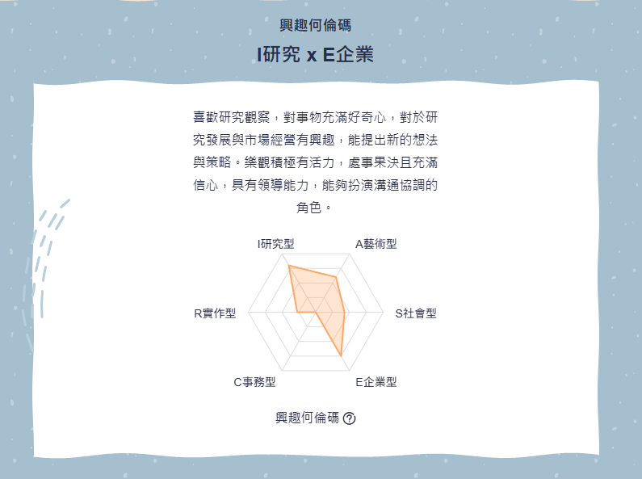
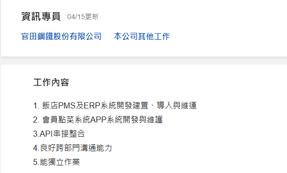

根據職涯測驗結果，我的興趣類型偏向研究型（I）與企業型（E）。 研究型代表我對分析、觀察與探索事物有高度興趣， 喜歡透過思考與整理來理解問題； 而企業型則代表我具備行動力與決策能力， 能夠將想法進一步轉化成具體方向與做法。
這樣的測驗結果讓我更了解自己的特質，也與我目前在資訊管理領域的學習方向相符。 在學習過程中，我不只喜歡理解系統邏輯， 也喜歡思考如何將所學應用在網站設計與功能實作上。
未來我希望能持續累積作品與實務經驗， 強化分析與實作能力，讓自己在資訊相關領域穩定發展。

我目前就讀靜宜大學資訊管理學系，在學期間接觸過資料庫、資訊系統與基礎程式設計等相關課程，並學過 SQL，對資料查詢與資料庫操作有基本的理解。 透過這些學習經驗，我逐漸對資訊系統與網站相關應用產生興趣，也希望未來能將所學實際應用在工作中。
會選擇這份工作是因為看到資訊專員的工作內容，包含系統開發建置、APP 維護以及 API 串接整合等工作，讓我覺得這份職務與我的學習方向有相當程度的關聯。 雖然目前仍在累積實務經驗，但我具備學習意願，願意從基礎開始熟悉系統流程與相關技術，逐步提升自己的能力。 我認為自己具備良好的學習態度與責任感，面對不熟悉的內容會主動查詢資料並反覆練習，努力把事情做好。 同時也能配合團隊合作，與他人進行基本的溝通與協調。未來希望能透過這份工作累積實務經驗，提升技術能力，並逐步培養獨立作業的能力，為公司創造實際價值。